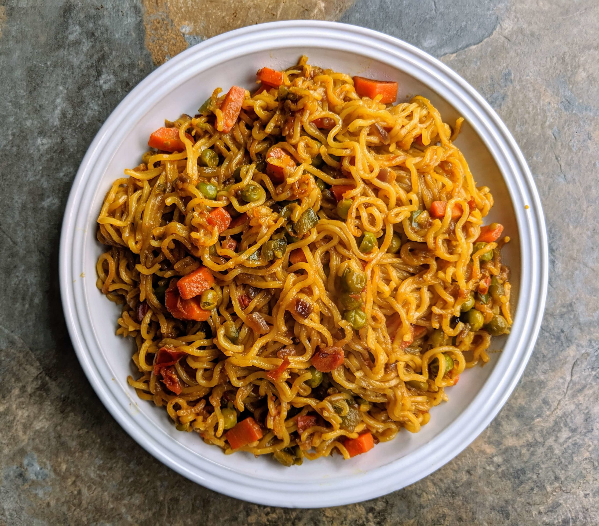

Maggi!

Description
Whenever you are hungry, a packet of instant noodles is the best companion you can have.
This time, why don't you learn how to make fried maggi noodles and enjoy it hot right at home?
It is very easy to make and contains very few ingredients.
Ingredients
- 1 large Onion thinly chopped
- 1 large tomato thinly chopped
- 1 Cup Boiled carrots, peas, potato cut in to small pieces
- 1 Maggi Noodles packet
- 1 Maggi Taste maker packet
- 1 Teaspoon Soy sauce
- Salt as needed
- 2 Tablespoon Oil
- 2 Green chillies finely chopped
Steps
- Prepare ingredients as mentioned in the list.
- Heat the oil and then roast the cumin seeds in it. Then, toss in the tomatoes, the onions and cook them well. Add the peas and the MAGGI Tomato ketchup, give it a stir, and let them cook for a while!
- Cook one pack of MAGGI Masala Noodles (just follow the instructions on the pack!) and transfer it onto a dish.
- Put the cumin-tomato-onion mix right on top of the MAGGI noodles and you are ready to serve the easy peasy fun!